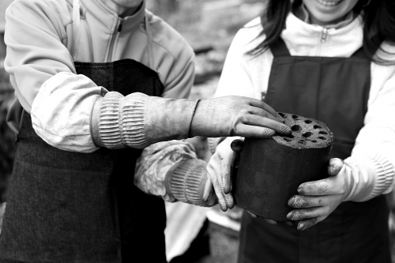

헌혈로 공급된 혈액 성분은 수혈이 필요한 환자를 위해 제공되거나, 혈액을 이용한 의약품을 만드는 데 쓰입니다. 예고없이 찾아오는 사고나 수술로 인한 과다 출혈, 백혈병, 혈우병 등의 혈액 관련 병을 앓고 있는 이들에겐 헌혈이 곧 생명 연장의 끈으로 이어지므로 헌혈이든 매혈이든 꾸준히 피를 의료기관에 공급해주는 체계는 현대 의료에서 반드시 필요합니다
재능기부
재능기부를 통해 여러 사람들에게 도움을 줄수 있습니다. 요리, 그림 그리기, 가르치기 등등 모든 재능들은 저소득측 아이들 교육, 벽화 그리기 같은 곳에 쓰이게 됩니다.

연탄나눔
겨울에 추운 한파에 몸을 떨게될 사람들에게 연탄을 나눠줄 수 있습니다. 여러분들의 도움은 그 사람들이 추운 겨울 속에서도 따뜻하게 살 수 있게 해줍니다.